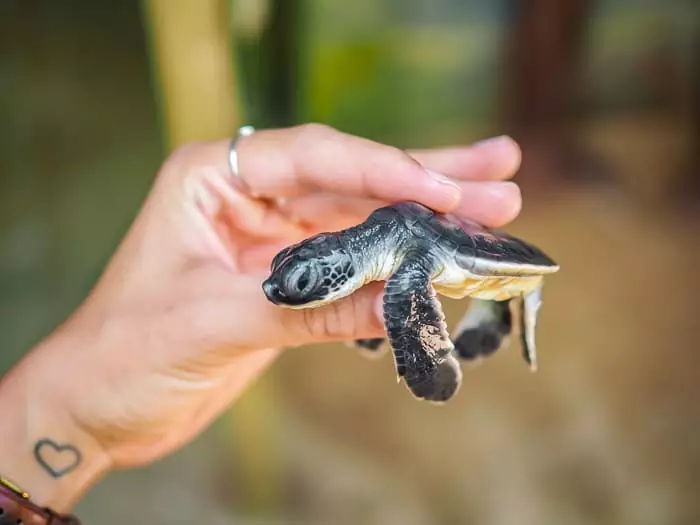
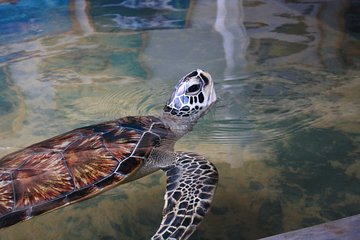

Bentota Turtle hatchery




10 Facts about the hatchery
- The Bentota Turtle Hatchery in Sri Lanka is a renowned conservation center dedicated to protecting and preserving sea turtles.
- Situated along the beautiful coast of Bentota, this hatchery serves as a safe haven for endangered turtle species.
- Visitors to the hatchery can witness the incredible sight of baby turtles hatching and making their way to the ocean.
- The hatchery plays a crucial role in raising awareness about the importance of turtle conservation among both locals and tourists.
- Knowledgeable staff and volunteers provide informative tours, educating visitors about the life cycle and threats faced by sea turtles.
- The hatchery actively works towards protecting turtle eggs from poaching and ensuring their successful incubation.
- Injured or disabled turtles are also rehabilitated at the hatchery, providing them with a chance to recover and return to their natural habitat.
- Visitors have the opportunity to participate in releasing baby turtles into the sea, contributing directly to the conservation efforts.
- The hatchery collaborates with local communities to promote sustainable fishing practices, reducing the accidental capture of turtles.
- Supporting the Bentota Turtle Hatchery not only allows visitors to witness these majestic creatures up close but also contributes to the long-term survival of endangered turtle species in Sri Lanka.